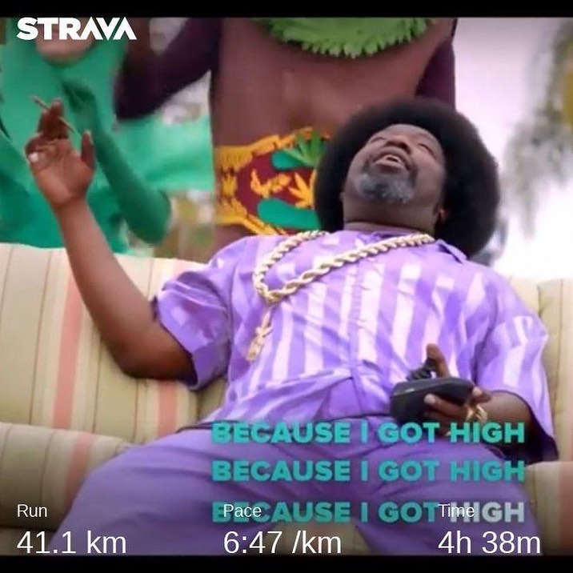

tl;dr - everyone cramps! Reminds me that there are non-negotiable weekly plan laws, too! Was working through massive backlog spike and few long hours days (...yes, @lifeatgoogle also has work to it 😂), skipped one base and one tempo runs (the usual: “oh, I need to sleep extra hour, can’t be bothered to run at 6:00am” / “oh, it rains outside, I don’t want to be badass today, I’ll stay in”), and Monday to Thursday deficit of 50% on training plan hit me hard on the planned Long Trail this morning. Base runs are massive importance on the exit of COVID-19 isolation, guys, because they bring back the fat adaptation to work for you. Don’t neglect them, everyone needs a reset of VO2max and fat-burning capability, and the lower the HR through your runs, the better! Check out the stories for additional content, by the way. Also, bumped in to Live Studio of @enduranceasia podcast (Scott Pugh on the picture) whom I missed much and couldn’t resist talking to. Scott is an awesome interviewer — check out his YouTube and Podcasts, — but the thing is, we had a 20km fatigue difference in legs, so talks kept driving my HR higher and higher, higher and higher, bumps along the trail were harder and harder, — glycogen was depleted more and more, and in the end... I got too high on HR and bonked badass! Just like in @ogafroman ‘s awesome music video: — Ladi da ta ta ta 🤪 Have awesome weekend everyone! . . . #trailrun #trailrunning #marathontraining #marathonrunner #cramps #singapore #sgrun #sgrunners #mcritchietrail #irunthisbody #weekenwarrior
2020-07-10 15:05:33
Back to main page